ChocolateChip-UI is ChUI (pronounced 'Chewy')
ChocolateChip-UI is a framework that provides layouts and widgets with built-in functionality to enable you to quickly and easily create mobile Web apps. In some cases these require no scripting at all. You create the correct markup and ChocolateChip-UI takes care of adding the functionality, such as navigations lists, back navigation, etc. In other cases you can sometimes initialize a widget with a single line of JavaScript. This leaves you more time to find the best way to provide the data that your app will consume. Because one of our goals is to keep things as small as possible, ChocolateChip-UI uses no images to create its widgets and controls, everything is created from WAML and CSS. Where icons are used for buttons, ChocolateChip-UI uses vector-based SVG images. This means that your Web app will always be resolution independent, always crisp and clean. Enjoy the new, ChUI ChocolateChip.
ChocolateChip-UI can work with ChocolateChip.js, or jQuery or Zepto. Just decide which library you want to use, that's all. There is only one version of ChocolateChip-UI. It has an abstraction layer that allows it to work transparently with all three libraries. Of course, on the client side you'll need to write JavaScript appropriate for the library you've choosen. This does offer you some flexibility. Say you stated out using jQuery, and then decided you want to switch to Zepto. Piece of cake. Just switch out the jQuery for Zepto. Because the APIs are similar, you may not even need to make any changes to your client code. However, sometimes there are subtle difference so you will need to test every feature to make sure your app is working as you expect.
Older Versions
If you need to support iOS 4 or an Android version before 4.0, you can still get the older versions of ChocolateChip-UI from the downloads page.
Some of the Possible Layouts and Controls
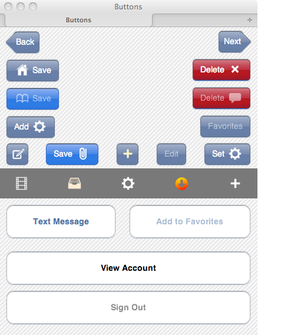 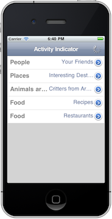 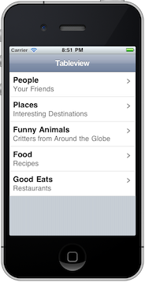 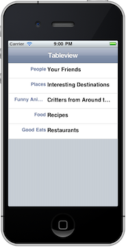 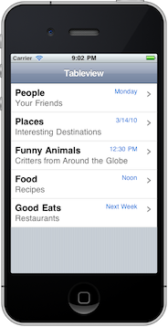 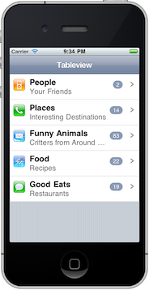 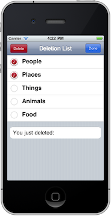 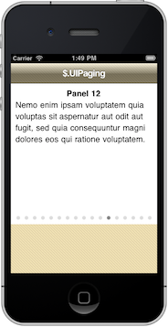 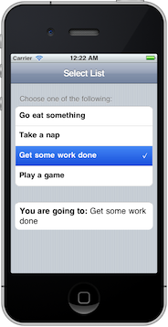 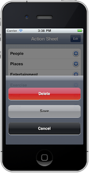 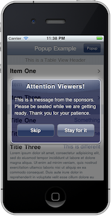 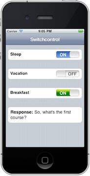 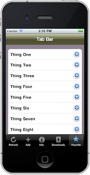 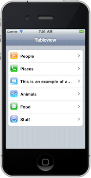 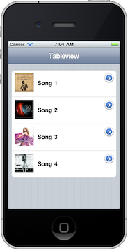 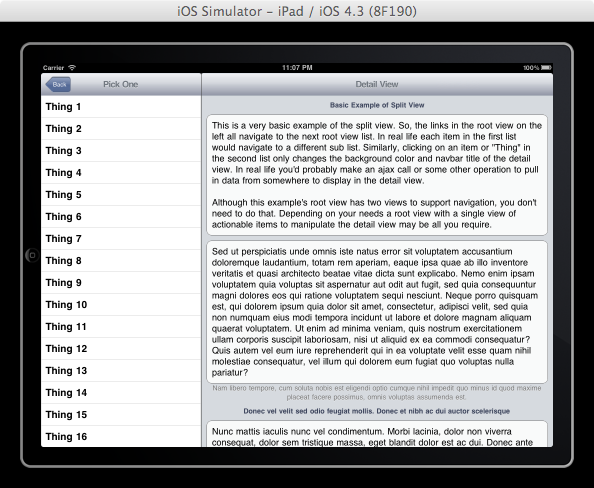 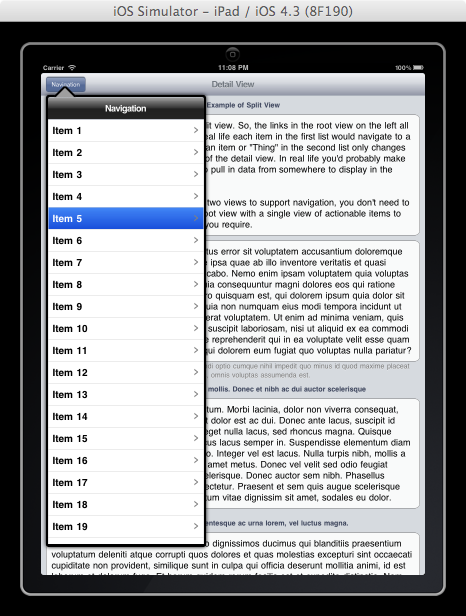Android Support
You can use the Android version of ChocolateChip-UI to create apps sporting the look and feel of Android 4.0. This provides the dark Holo theme. Click the Android link in the top menu bar to learn how to use and customize it.
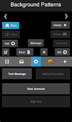 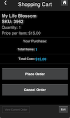
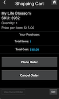
Localization Efforts
If you speak German, French, Spanish, Italian, Japanese, Chinese or any other language and would like to help translate this site with it's documentation and tutorials into to your language, please contact me. I will supply you with the material to translate and will make your language available here as an option. Thanks for visiting.
Just the basics
ChocolateChip is designed for mobile devices using Webkit-based browsers. Because of this, you can use any Webkit-based browser on the desktop during development. This includes Google Chrome and Apple Safari. ChocolateChip-UI provides a certain level of desktop compatiblity for testing purposes. You can also use emulators. Ultimately you'll want to test on actual devices as there are subtle differences in how desktop browsers and emulators render or react.